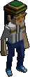

RastaME MR
Seu avatar no mundo real. Aponte a câmera para uma mesa ou o chão e controle com o joystick.
O navegador vai pedir permissão para usar a câmera.
Configurações e comandos
Realidade aumentada (ARCore)verificando…
Controle PS4 (opcional)aperte qualquer botão do controle
Backend da nuvem de pontos (opcional)conectando…
| Joystick da tela | andar · arraste além da borda para correr |
| Pular / Bola / Caixa / Oi | botões no canto direito |
| Trazer aqui | leva o avatar para onde a câmera mira |
| − / + | diminuir / aumentar o avatar |
| Malha | mostra o que o celular mapeou |
| Controle PS4 | analógico, ✕ pular, ○ bola, △ caixa, □ acenar, R2 correr, L1/R1 tamanho, direcional emotes |
Abrir o simulador (PC) — WASD, Espaço, Shift, G, F, E, Q/R · IJKL gira a câmera.